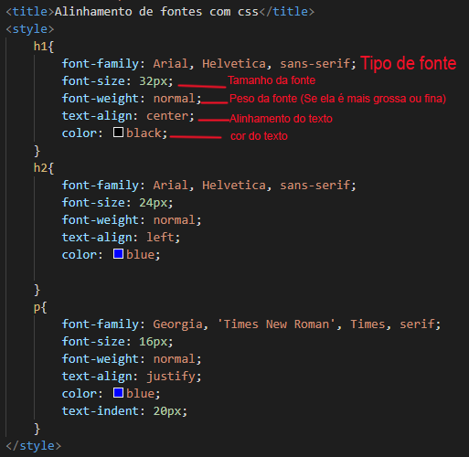

Para alinhar o texto ao centro da página por exemplo, nós utilizamos o comando text-align na folha de estilo css. Por quê? Porque a HTML5 é semântica e o alinhamento de texto é um conceito estético. Tudo que tem haver com estética e design da página deve ser inserido através de uma folha de estilo css.
O mesmo é válido para os alinhamentos a esquerda, direita e justificado. Para aplicar estes estilos de alinhamento utilize os comandos abaixo:
Embora dê para declarar as sentenças em modo abreviado utilizando o comando font eu prefiro colocar tudo separado, fica mais fácil de entender e deixa o código mais organizado.